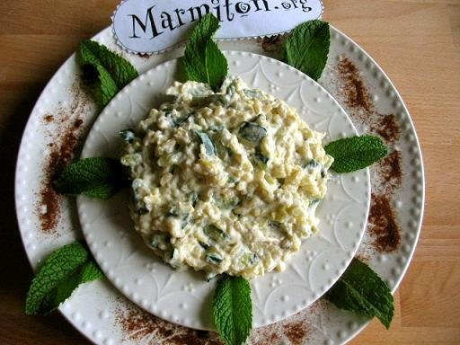

Risotto courgettes ricotta
Ingrédients
- 2 courgettes
- 15 g de beurre
- 1 c. à s. de persil
- 1 c. à s. de menthe
- 2 cubes de bouillon
- 2 oignons ou 2 échalotes
- 2 gousses d'ail
- 1 c. à s. d'huile d'olive
- 250 g de riz à risotto
- 10 cl de vin blanc
- 100 g de ricotta
- 50 g de parmesan

Préparation
Étape 1
Couper en petits dés 2 courgettes et les cuire 15min avec 15 g de beurre jusqu’à ce qu’elles soient tendres. Ajouter 1 c. à s. de persil et 1 c. à s. de menthe en fin de cuisson. Réserver.
Étape 2
Préparer 1L de bouillon avec 2 cubes de bouillon et le garder chaud.
Étape 3
Dans la même sauteuse, rissoler 2 oignons ou 2 échalotes et 2 gousses d'ail hachés dans 1 c. à s. d'huile d'olive. Une fois translucides, ajouter 250 g de riz à risotto et nacrer 1min à feu doux. Verser 10 cl de vin blanc et mélanger jusqu’à absorption.
Étape 4
Ajouter le bouillon louche par louche, en attendant l’absorption à chaque fois, pendant 30min jusqu’à ce que le riz soit al dente.
Étape 5
Toujours à feu doux, incorporer les courgettes, 100 g de ricotta et 50 g de parmesan. Saler, poivrer.